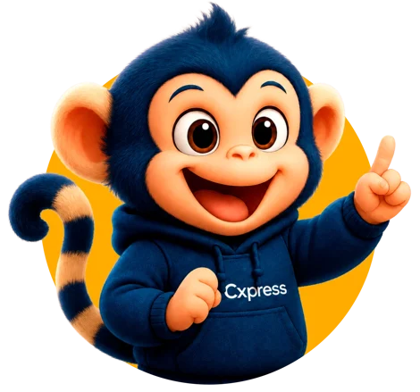

Suas informações foram recebidas com sucesso
Continue a conversa pelo WhatsAppUm especialista do nosso time vai falar com você.
(Nossa equipe atende de segunda a sexta das 9h às 18h.)
Escolheu receber uma ligação?
Fique de olho no telefone. Um especialista do nosso time entrará em contato.
